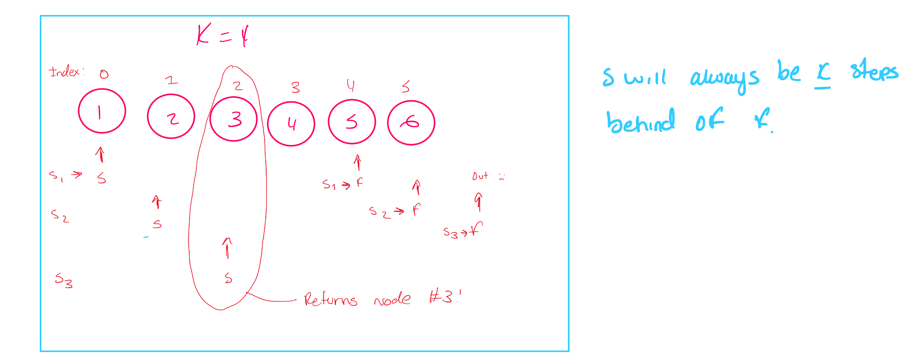

Linked-List
Node: A basic data structure which contain data and one or more links to other nodes.
Linked List Is similar to an array but each node will have a next pointer which points to the node representing the element int the sequence.
EX: 0–>1–>2
public static class ListNode{
int val;
ListNode next;
ListNode (int val){
this.val = val;
}
public static void main(String[] args){
ListNode one = new ListNode(1);
ListNode two = new ListNode(2)
ListNode three = new ListNode(3)
one.next = two;
two.next = three;
ListNode head = one;
}
}
class ListNode:
def __init__(self,val):
self.val = val
self.next = None
one = ListNode(1)
two = ListNode(2)
three = ListNode(3)
one.next = two
two.next = three
head = one
print(head.val)
print(head.next.val)
print(head.next.next.val)ListNode (1) is the head because it is the start of the linked list. Keep a reference to the head because it is the only node from where you can reach all elements in the list
| Advantages | Disadvantages |
|---|---|
Add & remove elements at any position in O(1) need to have reference node |
No random access. (Inefficient way of accessing elements in the array if large) |
| Doesn’t have a fixed size | Have more overhead than arrays. |
| Every element needs to have extra storage for the pointer |
- Assignment(=) When you assign a pointer to an existing linked list node the pointer refers to the object in memory.
ListNode ptr = head;
head = head.next;
head = null;ptr = head
head = head.next
head = NoneAfter the code is run prt still refers to the original head node VARIABLES REMAIN AT NODES UNLESS THEY ARE MODIFIED DIRECTLY
- Chaining .next
iterating through a linked list
int getSum(ListNode head){
int ans = 0;
while (head != null){
ans += head.val;
head = head.next;
}
return ans;
}int getSum(ListNode head){
if(head ==null){ return 0}
return head.val + getSum(head)
}
def getSum(head):
ans =0
while head:
ans += head.val
head = head.next
return ansdef getSum(head):
if not head: return 0
return head.val + get_sum(head.next)Types of linked list
Singly linked list
most common type
Each node only has a pointer the the next node. You can only move forward in the list when iterating.
reference node: next
- How do we add an element to a linked list so that it becomes the element at position i
class ListNode{
int val;
ListNode next;
ListNode (int val){ this.val =val}
}
// prevNode is the node at position i-1
void addNode(ListNode prevNode, ListNode nodeToAdd){
nodeToAdd.next = prevNode.next;
prevNode.next = nodeToAdd;
}class ListNode:
def __init__(self,val):
self.val = val
self.next = None
def add_node (prev_node, note_to_add)
note_to_add.next = prev_node.next
prev_node.next = node_to_add- How do we delete the element at position i?
class ListNode{
int val;
ListNode next;
ListNode (int val){ this.val =val}
}
// prevNode is the node at position i-1
void deleteNode(ListNode prevNode){
prevNode.next = prevNode.next.next
}class ListNode:
def __init__(self,val):
self.val = val
self.next = None
def delete_node (prev_node,)
prev_node.next = prev_node.next.nextBig (O)
With reference (i-1) O(1)
Without reference O(n)
Doubly linked list
Similar to singly linked list but each node also contains a pointer to the previous node (prev) allows iteration in both directions
class ListNode{
int val;
ListNode next;
ListNode prev;
ListNode(int val){
this.val = val
}
void addNode(ListNode node, ListNode nodeToAdd){
ListNode prevNode = node.prev;
nodeToAdd.next = node;
nodeToAdd.prev = prevNode;
prevNode.next = nodeToAdd;
node.prev = nodeToAddl
}
void deleteNode(ListNode node){
ListNode prevNode = node.prev;
ListNode nextNode = node.next;
prevNode.next = nextNode;
nextNode.prev = prevnode;
}
}class ListNode:
def __init__(self,val):
self.val = val
self.next = None
def delete_node (prev_node,)
prev_node.next = prev_node.next.nextLinked list with sentinel nodes
Sentinel nodes sit at the start and end of linked lists and are used to make operations and the code needed to execute those operations cleaner.
Start of linked list HEAD End of a linked list TAIL
class ListNode{
int val;
ListNode next;
ListNode prev;
ListNode(int val){
this.val = val
}
void addToEnd(ListNode nodeToAdd){
nodeToAdd.next = tail;
nodeToAdd.prev = tail.prev;
tail.prev.next = nodeToAdd;
tail.prev = nodeToAdd;
}
void removeFromEnd(){
if(head.next == tail){return;}
ListNode nodeToRemove = tail.prev;
nodeToRemove.prev.next = tail;
tail.prev = nodeToRemove.prev
}class ListNode{
int val;
ListNode next;
ListNode prev;
ListNode(int val){
this.val = val
}
void addToStart(ListNode nodeToAdd){
nodeToAdd.next = head;
nodeToAdd.prev = head.next;
head.next.prev = nodeToAdd;
head.next = nodeToAdd;
}
void removeFromStart(){
if(head.next == tail){return;}
ListNode nodeToRemove = head.next;
nodeToRemove.next.prev = head;
head.next = nodeToRemove.next
}class ListNode:
def __init__(self, val):
self.val = val
self.next = None
self.prev = None
def add_to_end(node_to_add):
node_to_add.next = tail
node_to_add.prev = tail.prev
tail.prev.next = node_to_add
tail.prev = node_to_add
def remove_from_end():
if head.next == tail:
return
node_to_remove = tail.prev
node_to_remove.prev.next = tail
tail.prev = node_to_remove.prev
def add_to_start(node_to_add):
node_to_add.prev = head
node_to_add.next = head.next
head.next.prev = node_to_add
head.next = node_to_add
def remove_from_start():
if head.next == tail:
return
node_to_remove = head.next
node_to_remove.next.prev = head
head.next = node_to_remove.next
head = ListNode(None)
tail = ListNode(None)
head.next = tail
tail.prev = headDummy pointers
int getSum(ListNode head){
int ans =0;
ListNode dummy = head;
while(dummy != null){
ans += dummy.val;
dummy = dummy.next
}
//same as before but we still have a pointer at the head
return ans;
}#Python
def get_sum(head):
ans =0
dummy = head
while dummy:
ans += dummy.val
dummmy = dummy.next
return ans
Fast and Slow Pointers
implementation of the two pointers technique
The “fast” pointer moves two nodes per iteration. The “slow” pointer moves one node per iteration.
EX: Given the head of a linked list with odd number of odes head, return the value of the node in the middle – given a linked list that represented 1–>2–>3–>4–>5 return 3
Solved using two pointer method. If we have one pointer moving twice as fast as the other, then by the time it reaches the end the slow pointer will be halfway trhough since its moving at half speed.
int getMiddle(ListNode head){
ListNode slow = head;
ListNode fast = head;
while(fast != null && fast.next != null){
slow = slow.next;
fast = fast.next.nextl
}
return slow.val;
}def get_middle(head):
slow = head
fast = head
while fast and fast.next:
slow = slow.next
fast = fast.next.next
return slow.val
Ex 2: Linked List Cycle Given the head of a linked list, determine fi the linked list has a cycle.
bool hasCycle (ListNode, head){
ListNode slow = head;
Listnode fast = head;
while(fast !=null && fast.next != null){
slow = head.next;
fast = head.next.next;
if(slow == fast){ return true}
return false;
}
}def hasCycle(self,head)->bool:
slow = head
fast = head
while fast and fast.next:
slow = slow.next
fast = fast.next.next
if slow == fast: -- cycle exist
return true
return false -- doesn't exist
public boolean hasCycle(ListNode head){
Set <ListNode> seen = new HashSet<>();
while(head != null){
if (seen.contains(head)){return true}
seen.add(head)
head=head.next
}
}def hasCycle(self,head: Optional[ListNode])->bool:
seen = set()
while head:
if head in seen:
return true
seen.add(head)
head = head.next
return falseEX 3: Given the head of a linked list and an integer k return the kth node from the end.
Given the linked list that represents 1 -> 2 -> 3 -> 4 -> 5 and k=2 return the node with value 4 as its 2nd from the end
int getNode(ListNode head, int k){
ListNode slow = head;
ListNode fast =head;
i=0;
while(i!=k):
ListNode = head.next;
ListNode = head.next.next;
}def getNode(self, head: Optional[ListNode],k) -> int:
slow = head
head = head
for i in range(k):
fast = fast.next
while fast:
slow = slow.next
fast = fast.next
return fast

Reversing a Linked List
ListNode reverseList(ListNode head){
ListNode prev = null;
ListNode curr = head;
while(curr != null){
ListNode nextNode = curr.next; //storing the next node
curr.next = prev;
prev = curr;
curr = nextNode
}
return prev;
}- When we are at a node curr, we need to set its next pointer to the node we were at previously.
- Use a prev pointer to track the previous node.
- The prev pointer needs to also update every iteration.
- After updating curr.next, set prev = curr in preparation for the next node.
- If we set curr.next = prev, then we lose the reference to the original curr.next.
- Use nextNode to keep a reference to the original curr.next.
EX: Swap Nodes in pairs Given the head of a linked list swap every pair of nodes. Input: 1->2->3->4->5->6 Output: 2->1->4->3->6->5
Example problems
Problem 1: Given the head of a singly linked list, return the middle node of the linked list. If there are two middle nodes, return the second middle node.
Input: head = [1,2,3,4,5] Output: [3,4,5] Explanation: The middle node of the list is node 3.
Input: head = [1,2,3,4,5,6] Output: [4,5,6] Explanation: Since the list has two middle nodes with values 3 and 4, we return the second one.
/**
* Definition for singly-linked list.
* public class ListNode {
* int val;
* ListNode next;
* ListNode() {}
* ListNode(int val) { this.val = val; }
* ListNode(int val, ListNode next) { this.val = val; this.next = next; }
* }
*/
class Solution {
public ListNode middleNode(ListNode head) {
ListNode slow = head;
ListNode fast = head;
while(fast != null && fast.next != null){
slow = slow.next;
fast = fast.next.next;
}
return slow;
}
}
Problem 2: Remove Duplicates from sorted list
/**
* Definition for singly-linked list.
* public class ListNode {
* int val;
* ListNode next;
* ListNode() {}
* ListNode(int val) { this.val = val; }
* ListNode(int val, ListNode next) { this.val = val; this.next = next; }
* }
*/
class Solution {
public ListNode deleteDuplicates(ListNode head) {
ListNode current = head;
while(current != null && current.next!=null){
if(current.next.val == current.val){
current.next = current.next.next;
}
else{
current = current.next;
}
return head;
}
}